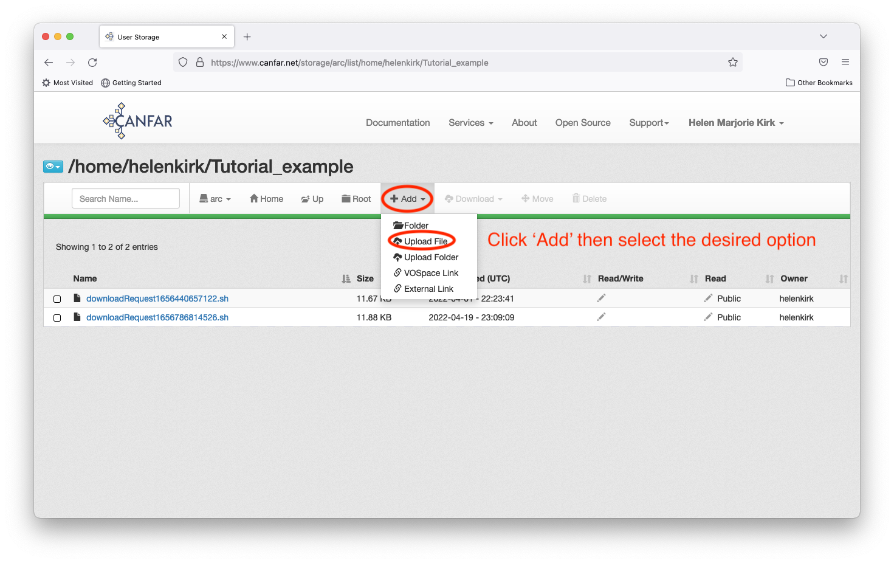
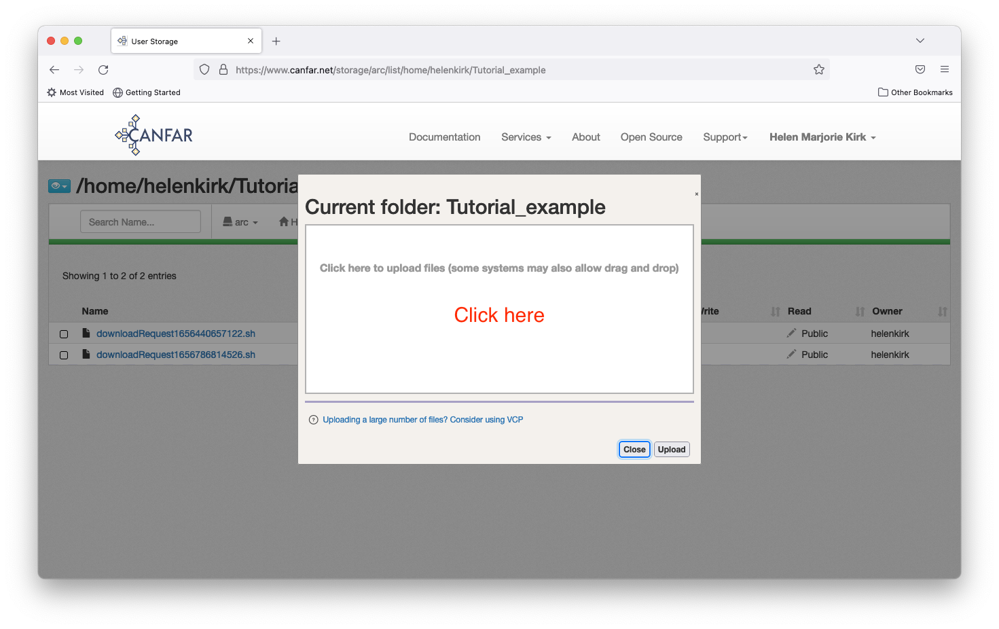
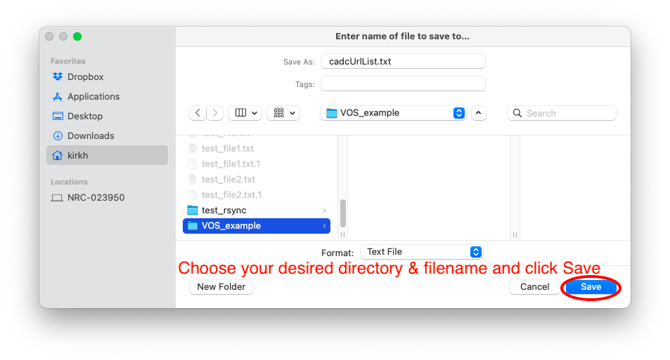
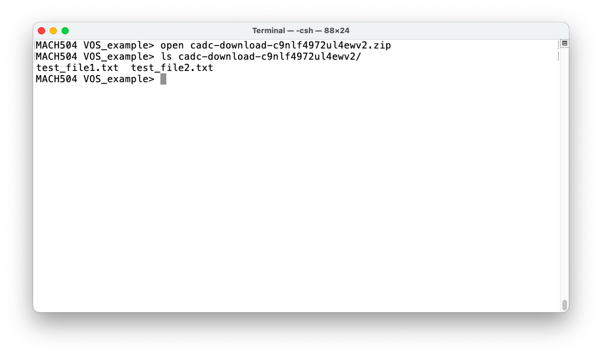

Using Web Storage¶
For both VOSpace and the Science Portal, users can upload or download files via a web interface (at the links given). This page provides a quick tutorial on how to use the web interface, which is nearly identical for both systems. Note that for the Science Portal, users can alternatively upload or download files using direct URLs as outlined here.
Upload File(s)¶
To upload one or more files (or folders), navigate to the desired
directory, then click the Add button along the top, selecting the
appropriate option. In this example, the directory of interest is in the
Science Portal, in a directory called Tutorial_example in the
user's home directory.

Follow the instructions on the pop-up box that appears next.

Once the file is selected, click Upload and then Ok.

Your file will now appear in the list for the directory.

Download Files¶
Downloading files is also straightforward, and three options are
outlined here. To begin, select the files you wish to download, and
click the Download button from the menu bar. The URL List,
HTML List, and Zip options are described below: the Zip
option will usually be the most practical, but the HTML List option
may be preferred when downloading only a few files, and URL List may
be best for scripting (command line with no user interaction required).

Download - URL List Option¶
For this method, you are downloading a list of URLs which you will then run additional commands on your local machine in order to grab the files themselves.
First, choose the URL List option, then select the desired directory
and file name and click save.

Next, unless the file(s) is/are publicly available, you will need to set up security certificates to access them via the command line. Do this by:
cadc-get-cert -u [username]
and entering your password at the prompt. You will need to have
installed the VOStools package
for this step. The command will generate a file called
~/.ssl/cadcproxy.pem which contains the security certificate
information. This certificate is valid for 10 days, so if you have
already recently generated a certificate, you can skip the
cadc-get-cert step.
Now, you can run the command to download the files themselves:
wget --content-disposition -i cadcUrlList.txt --certificate ~/.ssl/cadcproxy.pem --ca-certificate ~/.ssl/cadcproxy.pem
where cadcUrlList.txt will need to be updated if you changed the
originally downloaded file name from its default. At the end of this
process, you will find the files in your current directory

NB: if you are downloading files from VOSpace and not the Science Portal, there is an alternative authentication method which does not require downloading VOStools. The syntax looks like this:
wget --content-disposition -i cadcUrlList.txt --http-user=[username] --ask-password
The remainder of the process is identical to what was outlined above.
Download - HTML List Option¶
Clicking the HTML List option will bring up a pop up window with a
series of long URL strings - each (ususally 2-line) entry is a clickable
direct link to your individual files. You can interact with these as you
normally do with file download links. For example, you can left click
the link to bring up a pop-up menu to tell your browser to directly
download the file. Alternatively, you can right-click the link and your
browser will display the file directly (for appropriate file types such
as pdf). This method is clearly only sensible when you are looking to
download a very small number of files.

Download - Zip Option¶
The Zip option allows you to download a single zip file containing
all of your requested files. Choose the zip option, and click
save in the pop-up window after adjusting your preferred directory
and zip file name.

You can then unzip the file and interact with the files as usual. In
this example (terminal on a Mac laptop), the file is unzipped using
open and the files can thereafter be viewed in the unzipped directory.
